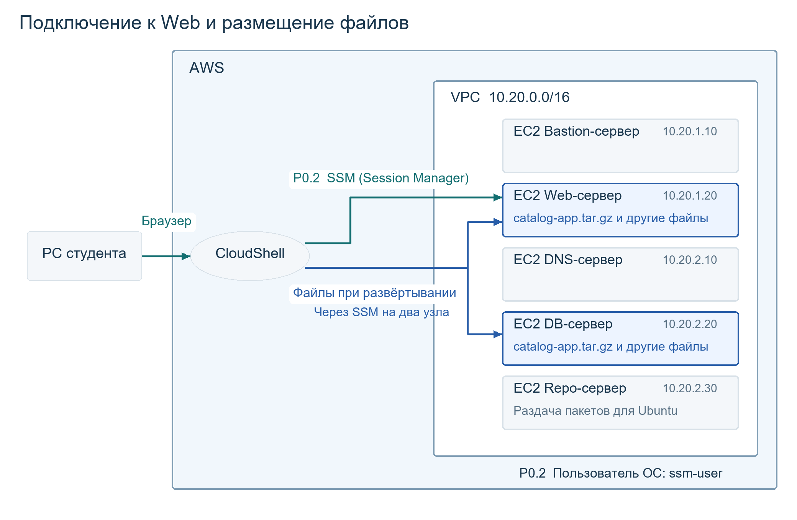

Web Infrastructure: практика P0-P6 с подробными шагами
Первая редакция для проверки преподавателем. Полное прохождение по пособию студентом ещё не проверено.
Русский и узбекский тексты синхронизированы с японским оригиналом. Редактура носителями языка ещё не выполнена.
Практика P0–P6 · Задания M0–M6
Как пользоваться пособием
Сначала прочитайте задание P; при необходимости проходите подробный пример по шагам. P - тренировка с подробными шагами. В M самостоятельно используйте другие объекты/значения. Номера заданий не являются номерами занятий; идите в своём темпе. Выполнение P не означает выполнение M.
P0 → M0 → P1 → M1 → P2 → M2 → P4 → M4 → P5 → P6 → M5 → M6
P5 требует DNS из M2. В P4 потренируйтесь подключаться к БД по IP и имени. Приложение использует db.lab.test. Перед переключением practice → mission завершите setup в P6.
P0=1, M0=1, M1=8, M2=13, M4=9, M5=13, M6=16: всего 61 балл. Нет личной демонстрации, backup/restore, дополнительных дисков и разработки приложения. Пересчёт в 25 баллов делает преподаватель отдельно. Повторные отправки возможны до объявленного срока. PASS разных попыток не объединяются; максимум автоматически не выбирается.
Среда и подготовка
Сначала завершите проверку подписи начального комплекта, создание пяти узлов либо install в существующую среду, внутренний SSH и личную регистрацию. Инструкция - distribution/STUDENT.md в zip. Не храните приватные ключи в общем Windows; используйте CloudShell личного Academy account. Преподаватель выдаёт личный анонимный Lab ID, fingerprint и срок действия.
Общие private IP ниже; public IPv4 не фиксируется. AWS region us-east-1, Ubuntu24.04/amd64. RDP: labuser; SSM: ssm-user; внутренний SSH: ubuntu. Не путайте пользователя и роль сервера.
| Role | Private IPv4 | Назначение |
|---|---|---|
| bastion | 10.20.1.10 | RDP3389 / Firefox / SSH |
| web | 10.20.1.20 | HTTP80 / private8080 / loopback8000 |
| dns | 10.20.2.10 | BIND UDP/TCP53 |
| db | 10.20.2.20 | PostgreSQL5432 |
| repo | 10.20.2.30 | HTTP80 с заранее сохранёнными подписанными ресурсами |
В P0 и M0 открывайте Session Manager из списка EC2. Если в дальнейшем шаг требует подключения из CloudShell, выполните там aws ssm start-session --target i-..., подставив ID сервера. В обоих случаях на сервере используется ssm-user.
Редактор nano: открыть файл → ввести текст → Ctrl+O → Enter сохранить → Ctrl+X выйти. Блок конфигурации не выполняется как shell-команда. В psql меняется prompt; SQL/\password вводятся внутри, \q возвращает в Ubuntu. Не продолжайте после ошибки без проверки результата.
Нумерованные комментарии показывают порядок и цель внутри шага. # используется в shell, -- внутри psql. Комментарии менять не нужно. Выполняйте по одной команде, дожидаясь подключения, редактора и ввода пароля. Команда с продолжением строки остаётся одной командой.
Как читать шаги
В каждом P идут задание, объяснение, шаги и вопросы. Выполняйте команды по одной и читайте результат, не вставляйте весь раздел сразу. Обратная косая черта в конце строки означает продолжение: эта и следующая строки составляют одну команду.
Блок bash вводится в терминале указанного узла. Блок text может содержать конфигурацию, ввод внутри psql или пример вывода: читайте пояснение перед ним. Строка с # - комментарий. Не добавляйте приглашение $ или postgres=# из своего терминала. Значения с YOUR- заменяйте своими.
Проверяйте по порядку: сохранённый файл, синтаксис, применение к службе, реальное соединение. Правильный файл ещё не доказывает, что работающая служба уже использует его. Сопоставляйте HTTP-ответ, DNS-ответ или SQL-результат с журналом.
Система и пути соединений
| Источник | Назначение | Protocol / port | Цель |
|---|---|---|---|
| Windows PC | Web public IPv4 | TCP/80 | Публичный доступ через Internet Gateway к каталогу и статическим файлам. |
| Windows PC | bastion public IPv4 | TCP/3389 | RDP из разрешённого CIDR к рабочему столу бастиона. |
| bastion | Web/DNS/DB/repo | TCP/22 | Внутренний SSH для управления; приватный ключ остаётся на бастионе. |
| bastion / Web | DNS 10.20.2.10 | UDP+TCP/53 | Разрешение имён lab.test. DNS не выдаёт содержимое Web-страницы. |
| Web app | DB 10.20.2.20 | TCP/5432 | SQL от роли приложения. Прямое соединение Windows с DB не используется. |
| bastion | Web 10.20.1.20 | TCP/8080 | Администрирование через admin.lab.test отдельно от публичного порта 80. |
| Nginx on Web | 127.0.0.1 on Web | TCP/8000 | Передача приложению на том же Web; 127.0.0.1 - текущий локальный узел. |
SSM начальной среды - отдельный путь управления из CloudShell в EC2. Он не включён в путь обычного Web-запроса. Внутренние IP и порты таблицы заданы этим Lab, а не всеми Web-системами.
P0 Своя среда и место выполнения команд
Что изучаем
Выбрать нужный сервер в списке EC2, подключиться через Session Manager и проверить результат задания.
Задание
В своей готовой среде проверьте идентификаторы и роли пяти серверов, затем проверьте, к какому серверу и под каким пользователем вы подключились.
Подключение к серверам и размещение файлов для настройки

Зелёная стрелка показывает подключение к терминалу в P0.2. Синие стрелки показывают размещение файлов для настройки серверов при создании среды. Repo-сервер раздаёт пакеты для Ubuntu.
Что сделать в Practice0
Проверьте свой AWS-аккаунт, роль каждого сервера и среду выполнения команд.
Файлы для настройки серверов, размещённые при создании среды
После создания среды по общему коду архив catalog-app.tar.gz с приложением и SQL для настройки БД уже находится в /var/lib/jdu-web/lesson-resources-r1 на Web- и DB-серверах. В целях безопасности исходящие HTTPS-подключения с Web-сервера к интернету ограничены, поэтому скрипт доставляет файлы по показанному маршруту.

При создании среды по общему коду CloudShell загружает файлы для настройки серверов с GitHub и размещает их на Web- и DB-серверах через SSM.
Пример решения (порядок действий)
P0.1 Проверить instance ID пяти серверов
Среда выполнения:
AWS Console своего студенческого аккаунта
Цель и действия:
Введите EC2 в поле Search в верхней части AWS Console и откройте консоль EC2. Откройте EC2 → Instances и найдите пять серверов своей среды в столбце Name. В той же строке проверьте полный идентификатор с префиксом i- в столбце Instance ID.

Список Instances в EC2. Для P0 выберите строку с окончанием имени -web, для M0 - -db.
P0.2 Подключиться к Web-серверу через Session Manager
Среда выполнения:
SSM-терминал Web-сервера: ssm-user
Цель и действия:
Нажмите Instance ID Web-сервера, найденного в P0.1. На странице сведений нажмите стрелку справа от Connect и выберите Connect with SSM Session Manager. Выполните команды ниже в терминале новой вкладки. id -un показывает пользователя ОС, а pwd - текущий каталог. Значение web в поле role файла /etc/jdu-web/bootstrap.json подтверждает, что открыт Web-сервер. Создайте в своём домашнем каталоге файл p0-connection.txt с одной строкой web.

Страница EC2. Нажмите стрелку справа от Connect и выберите Connect with SSM Session Manager. На снимке показан Web-сервер.
Команды: нумерация внутри этого шага
# 1. Показать имя пользователя ОС в этом терминале.
id -un
# 2. Перейти в рабочий каталог $HOME.
cd "$HOME"
# 3. Показать текущий рабочий каталог.
pwd
# 4. Прочитать только role из bootstrap, чтобы проверить выбранный сервер.
python3 -c 'import json;print(json.load(open("/etc/jdu-web/bootstrap.json"))["role"])'
# 5. Записать одну строку web в проверочный файл домашнего каталога.
printf '%s\n' web > "$HOME/p0-connection.txt"
# 6. Прочитать $HOME/p0-connection.txt без изменения.
cat "$HOME/p0-connection.txt"
Ожидаемый результат и его смысл:
Команда id -un выводит ssm-user, команда pwd после перехода в домашний каталог выводит /home/ssm-user, а роль и содержимое файла имеют значение web.
В приглашении видны имя пользователя, имя узла и текущий каталог. ~ означает домашний каталог, а pwd показывает полный путь. Если настройка не смогла включить это отображение и видно только $, выполните следующую строку. Завершите сеанс командой exit.
exec env PS1='\u@\h:\w\$ ' bash --norc -i

Терминал Session Manager. После настройки приглашение обновляет текущий каталог при переходе.
P0.3 Открыть рабочий стол бастиона по RDP
Среда выполнения:
Windows PC студента (общая учётная запись)
Цель и действия:
Используйте текущий public IPv4 бастиона из EC2. Нажмите Windows+R, введите mstsc /prompt и Enter. В Computer укажите IP, пользователь labuser, пароль - свой RDP из начальной установки, не пароль Windows. Не выбирайте сохранение credentials. Если появится синий login xrdp, выберите Session=Xorg и labuser.

Нажмите Windows+R, чтобы открыть окно «Выполнить», и введите mstsc /prompt в поле «Открыть».
Команды: нумерация внутри этого шага
# 1. Открыть RDP Windows с запросом учётных данных.
mstsc /prompt
Смысл команд и настроек:
RDP передаёт экран и ввод бастиона. Запрос Firefox внутри RDP идёт от бастиона, а не Windows. Раскладка клавиатуры влияет на символы пароля; язык интерфейса и раскладка - разные настройки.
Ожидаемый результат и его смысл:
Открываются Xfce и Firefox внутри Ubuntu-бастиона. Это не браузер Windows. labuser не имеет sudo: настройку выполняйте через CloudShell → SSM/ssm-user.
Если не получилось:
При Login failed проверьте имя и раскладку клавиатуры. Не отправляйте пароль в чат. При недоступности сверьте текущий IP и разрешённый CIDR с преподавателем; не открывайте 3389 для всех. Перед закрытием RDP сохраните работу.
Проверка и сдача
Скрипт начальной настройки создаёт в AWS сервис проверки заданий (Lambda). После упражнения с RDP войдите на указанную преподавателем страницу через учебный аккаунт Google, выберите свой Lab и P0 и запустите проверку. Верный файл из одной строки web в вашем домашнем каталоге на Web-сервере даёт 1 балл. Проверьте, что балл сохранён.
Проверка понимания (без баллов)
Какой узел изменится, если выполнить шаги DB в открытом SSM-сеансе Web?
Объяснение:
Команды выполняются на подключённом Web-сервере. Для работы с DB выберите DB-сервер в списке EC2 и откройте новый терминал через Session Manager.
P1 Выдача статического файла по HTTP
Что изучаем
Связать Nginx, файл, прослушивание порта, HTTP-ответ и access log.
Задание
Файл /var/www/html/practice.txt на Web должен возвращать заданный текст с HTTP 200: локально, с бастиона и извне.
Схема задания

Толстая рамка отмечает основной объект. Настраивайте в терминале, указанном в шаге; стрелки показывают направление подключения или проверки. Разрешения SG заданы начальным комплектом; здесь настраивается сервер. Слева Интернет, справа VPC в AWS. IGW стоит на границе VPC; все EC2, включая бастион, находятся в AWS.
- File: /var/www/html/practice.txt
- URL path: /practice.txt
JDU WEB-02 practice: HTTP response verified.
Как это работает
Состояние перед началом:
Web уже создан, но учебный файл ещё не выдаётся.
Что сделать в Practice1
Nginx выдаёт practice.txt на порту 80 и записывает запрос в журнал.
Путь URL /practice.txt соответствует файлу /var/www/html/practice.txt на Web. Успех через 127.0.0.1 проверяет только сам Web. Чтение того же текста с бастиона и Windows проверяет другие участки пути. См. документацию Nginx.
Пример решения (порядок действий)
P1.1 Установить Nginx из внутреннего APT
Среда выполнения:
SSM-терминал Web-сервера: ssm-user
Цель и действия:
Подключитесь по SSM к Web как в P0 и проверьте role=web. Проверьте APT source: используется только подписанный repo 10.20.2.30. update получает индекс, install устанавливает пакет. Не добавляйте внешние источники.
Команды: нумерация внутри этого шага
# 1. Прочитать /etc/apt/sources.list.d/jdu-web.sources без изменения.
cat /etc/apt/sources.list.d/jdu-web.sources
# 2. Обновить индекс пакетов внутреннего repo; считать ошибки загрузки сбоем.
sudo apt-get update -o APT::Update::Error-Mode=any
# 3. Установить nginx из внутреннего repo без рекомендуемых дополнений.
sudo apt-get install --no-install-recommends nginx
Смысл команд и настроек:
Apt-get update обновляет список пакетов, install устанавливает выбранный пакет. --no-install-recommends исключает рекомендованные дополнения. Signed-By задаёт доверенный ключ: доступ к repo ещё не доказывает успешную проверку подписи.
Ожидаемый результат и его смысл:
В source указаны внутренний IP и Signed-By; установка завершается без ошибки подписи. На запрос установки ответьте Y.
Если не получилось:
При ошибке получения проверьте repo, его running/SSM и IP. Не обходите подпись через --allow-unauthenticated или внешний pip.
P1.2 Создать точный текст и права файла
Среда выполнения:
SSM-терминал Web-сервера: ssm-user
Цель и действия:
Создайте текст через nano: одна точная строка, указанная ниже, с переводом строки в конце. Ctrl+O → Enter сохраняет, Ctrl+X закрывает редактор. install копирует файл; -o/-g задают владельца и группу, -m - права.
Команды: нумерация внутри этого шага
# 1. Перейти в рабочий каталог ~.
cd ~
# 2. Создать рабочий каталог; существующий сохранить.
mkdir -p jdu-web-practice/p1
# 3. Перейти в рабочий каталог jdu-web-practice/p1.
cd jdu-web-practice/p1
# 4. Показать текущий рабочий каталог.
pwd
# 5. Открыть practice.txt: ввести текст, сохранить и выйти.
nano practice.txt
# File content: JDU WEB-02 practice: HTTP response verified.
# 6. Установить файл с нужными владельцем, группой и правами.
sudo install -o root -g root -m 0644 practice.txt /var/www/html/practice.txt
# 7. Прочитать владельца, группу, права и имя указанных файлов.
stat -c '%U:%G %a %n' /var/www/html/practice.txt
# 8. Прочитать /var/www/html/practice.txt без изменения.
cat /var/www/html/practice.txt
Смысл команд и настроек:
Разделите рабочий файл nano и файл выдачи Nginx. Здесь install копирует файл с владельцем root:root и режимом 0644, а не устанавливает пакет. Писать может владелец, остальные могут читать. Завершающий перевод строки входит в содержимое.
Ожидаемый результат и его смысл:
Ожидается root:root 644 и ровно строка JDU WEB-02 practice: HTTP response verified. Регистр, пробелы, точка и конечный перевод строки важны.
Если не получилось:
Если вы ещё в nano, сначала сохраните и выйдите. Не меняйте существующий mission.txt.
P1.3 Проверить Web root и запустить сервис
Среда выполнения:
SSM-терминал Web-сервера: ssm-user
Цель и действия:
Начальный сайт Ubuntu использует root /var/www/html. Через nginx -T найдите включённый /etc/nginx/sites-enabled/default, root и listen 80. При необходимости редактируйте sudo nano; reload выполняйте после успешной проверки. enable --now запускает сейчас и включает автозапуск.
Команды: нумерация внутри этого шага
# 1. Показать полную конфигурацию Nginx; не передавать секреты.
sudo nginx -T
# 2. Проверить синтаксис и файлы конфигурации Nginx.
sudo nginx -t
# 3. Запустить nginx сейчас и включить автозапуск.
sudo systemctl enable --now nginx
# 4. Перечитать настройки nginx без остановки.
sudo systemctl reload nginx
# 5. Прочитать текущее состояние nginx.
systemctl is-active nginx
# 6. Показать IP, порты и процессы слушающих TCP-сокетов.
sudo ss -lntp
Смысл команд и настроек:
Nginx -T выводит конфигурацию, -t проверяет синтаксис. В systemctl enable включает запуск при загрузке, --now запускает сейчас. После сохранения файла проверьте reload, состояние службы и порт.
Ожидаемый результат и его смысл:
Ожидаются успешный синтаксис, active и слушатель вроде 0.0.0.0:80. Только 127.0.0.1:80 недоступен другим узлам.
Если не получилось:
При ошибке используйте имя файла и строку из nginx -t. Изменение SG не исправит синтаксис.
P1.4 Посмотреть ответ на самом Web
Среда выполнения:
SSM-терминал Web-сервера: ssm-user
Цель и действия:
curl - HTTP-клиент; -i показывает статус, заголовки и тело. 127.0.0.1 означает этот Web-сервер, не его public IP. Сравните ответ, а не только код завершения команды.
Команды: нумерация внутри этого шага
# 1. Отправить HTTP к http://127.0.0.1/practice.txt; показать статус, заголовки и тело.
curl --noproxy '*' -i http://127.0.0.1/practice.txt
Смысл команд и настроек:
Curl -i показывает HTTP-заголовки вместе с телом. Адрес 127.0.0.1 означает сам Web, запрос не идёт через Internet. Проверяйте и код 200, и заданный текст; ответ другой страницы не подходит.
Ожидаемый результат и его смысл:
HTTP 200 и заданный текст. При 404 проверяйте файл/root/URL; при connection refused - сервис и слушатель.
Если не получилось:
При Welcome to nginx проверьте, что запросили /practice.txt, а не /.
P1.5 Проверить тот же файл с бастиона и извне
Среда выполнения:
SSM-терминал бастиона: ssm-user
Цель и действия:
Выйдите из Web через exit, откройте SSM бастиона из CloudShell и запросите URL ниже. Затем exit возвращает в CloudShell; там запросите тот же путь командой curl -i по текущему public IPv4 Web из EC2. Не путайте private 10.20.1.20 с public IPv4.
Команды: нумерация внутри этого шага
# 1. Отправить HTTP к http://10.20.1.20/practice.txt; показать статус, заголовки и тело.
curl --noproxy '*' -i http://10.20.1.20/practice.txt
Смысл команд и настроек:
Тот же curl с бастиона проверяет внутренний путь. В браузере Windows нужен текущий public IP Web. Недоступность 10.20.1.20 с Windows сама по себе не означает остановку Web.
Ожидаемый результат и его смысл:
На обоих маршрутах 200 и одинаковый текст. HTTP 80 открыт, управляющий 8080 и DB 5432 не публикуются.
Если не получилось:
Если внутренний запрос успешен, а внешний нет, проверьте текущий public IP и Lab. Не ослабляйте базовые SG.
P1.6 Связать запрос с журналом и отправить
Среда выполнения:
SSM-терминал Web-сервера: ssm-user
Цель и действия:
Вернитесь на Web. В access log найдите время, IP клиента, путь и статус. Это доказательство обработки запроса, не только наличия файла. После exit в CloudShell выберите P1 в Web Portal на PC и запустите проверку.
Команды: нумерация внутри этого шага
# 1. Прочитать последние 20 строк access log и найти свой HTTP-запрос.
sudo tail -n 20 /var/log/nginx/access.log
# 2. Закрыть сеанс текущего сервера и вернуться в CloudShell.
exit
Смысл команд и настроек:
Сопоставьте время, путь и статус в access log с недавним curl. Tail читает последние строки и не меняет журнал. После exit проверьте P1 в браузере PC.
Ожидаемый результат и его смысл:
Результаты восьми учебных проверок и готовности показаны и сохранены. P1 не даёт оценочных баллов; M1 требует другого файла и текста.
Если не получилось:
Если идёт обработка, обновите результат. При ошибке сохранения прочитайте причину. Не меняйте ожидаемый текст checker.
Пример чтения вывода (не вводить)
HTTP/1.1 200 OK
JDU WEB-02 practice: HTTP response verified.
Показаны только нужные строки; реальный ответ содержит и другие заголовки. Проверьте 200, текст и путь/статус в access log.
Проверка понимания (без баллов)
На Web ответ 200, а с бастиона соединение не проходит. Что проверить до изменения файла?
Объяснение:
Адрес назначения, адрес/порт прослушивания и разрешение пути bastion → Web. Содержимое файла и доступность - разные проверки.
P2 Внутренний DNS и системное разрешение имён
Что изучаем
Последовательно настроить zone, A-записи, ACL BIND и resolver клиентов.
Задание
Настройте guide.lab.test → 10.20.1.20 и practice-db.lab.test → 10.20.2.20; откройте HTTP из P1 по имени. Фиксированные IP не меняются.
Схема задания

Толстая рамка отмечает основной объект. Настраивайте в терминале, указанном в шаге; стрелки показывают направление подключения или проверки. Разрешения SG заданы начальным комплектом; здесь настраивается сервер.
| DNS name | A / IPv4 |
|---|---|
| guide.lab.test | 10.20.1.20 |
| practice-db.lab.test | 10.20.2.20 |
Как это работает
Состояние перед началом:
HTTP из P1 работает по IP; DNS ещё предстоит настроить.
Что сделать в Practice2
Учебные имена BIND доступны обычному резолверу бастиона и Web.
DNS отвечает на запрос имени, а не выдаёт Web-страницу. BIND ведёт зону lab.test; A-запись возвращает IPv4. Различайте dig с явным сервером и getent/браузер с настройками ОС. После DNS выполняется отдельное HTTP-соединение. Документация BIND.
Пример решения (порядок действий)
P2.1 Установить BIND и сохранить исходные настройки
Среда выполнения:
SSM-терминал DNS-сервера: ssm-user
Цель и действия:
Подключитесь к DNS, проверьте role=dns. cp -a сохраняет атрибуты исходного файла, -n не заменяет прежнюю копию. Это страховка при редактировании, не задание по backup/restore БД.
Команды: нумерация внутри этого шага
# 1. Обновить индекс пакетов внутреннего repo; считать ошибки загрузки сбоем.
sudo apt-get update -o APT::Update::Error-Mode=any
# 2. Установить bind9 bind9-utils из внутреннего repo без рекомендуемых дополнений.
sudo apt-get install --no-install-recommends bind9 bind9-utils
# 3. Скопировать исходный файл в резервную копию, не затирая существующую.
sudo cp -an /etc/bind/named.conf.options /etc/bind/named.conf.options.before-p2
# 4. Скопировать исходный файл в резервную копию, не затирая существующую.
sudo cp -an /etc/bind/named.conf.local /etc/bind/named.conf.local.before-p2
Смысл команд и настроек:
Named - имя службы BIND; named-checkconf и другие команды проверяют конфигурацию. Опция -n в cp -an не перезаписывает существующую резервную копию при повторном запуске.
Ожидаемый результат и его смысл:
Установка использует внутренний repo. В M2 добавляйте записи в этот же DNS, сохраняя P2.
Если не получилось:
Не копируйте целиком named.conf из чужого Lab. Если своя zone уже есть, сначала изучите её.
P2.2 Настроить клиентов и forwarder
Среда выполнения:
SSM-терминал DNS-сервера: ssm-user
Цель и действия:
Откройте sudo nano /etc/bind/named.conf.options, введите и сохраните текст ниже. acl задаёт разрешённых клиентов; listen-on - адреса DNS; forward only передаёт внешние имена AWS DNS. И query, и recursion ограничены тремя источниками. dnssec-validation no соответствует изолированной учебной схеме forwarding.
Конфигурация или данные: не выполнять как команды
acl "jdu_clients" { 127.0.0.1; 10.20.1.10; 10.20.1.20; };
options {
directory "/var/cache/bind";
listen-on { 127.0.0.1; 10.20.2.10; };
listen-on-v6 { none; };
allow-query { jdu_clients; };
allow-recursion { jdu_clients; };
allow-query-cache { jdu_clients; };
recursion yes;
forward only;
forwarders { 10.20.0.2; };
dnssec-validation no;
allow-transfer { none; };
};
Смысл команд и настроек:
Allow-query задаёт клиентов запросов, allow-recursion - клиентов рекурсивного поиска. Имена lab.test берутся из своей зоны, внешние передаются forwarder. В этом Lab клиенты ограничены бастионом, Web и localhost.
Ожидаемый результат и его смысл:
Это содержимое файла, не команды shell. 10.20.0.2 - resolver AWS, 10.20.2.10 - ваш BIND.
Если не получилось:
Точки с запятой и фигурные скобки обязательны. Не расширяйте ACL до any или 0.0.0.0/0.
P2.3 Объявить zone и создать A-записи
Среда выполнения:
SSM-терминал DNS-сервера: ssm-user
Цель и действия:
В sudo nano /etc/bind/named.conf.local запишите первый блок zone. Создайте каталог командой sudo install -d -m 0755 /etc/bind/zones, затем откройте sudo nano /etc/bind/zones/db.lab.test и запишите остальной текст. SOA - служебные данные, NS - авторитетный DNS, A - имя/IPv4. Точка в конце обозначает полное имя; увеличивайте serial при изменениях.
Конфигурация или данные: не выполнять как команды
// /etc/bind/named.conf.local
zone "lab.test" {
type primary;
file "/etc/bind/zones/db.lab.test";
allow-transfer { none; };
allow-update { none; };
};
; /etc/bind/zones/db.lab.test
$TTL 300
@ IN SOA dns.lab.test. hostmaster.lab.test. (
2026102301 3600 600 604800 300 )
@ IN NS dns.lab.test.
dns IN A 10.20.2.10
guide IN A 10.20.1.20
practice-db IN A 10.20.2.20
Смысл команд и настроек:
Объявление зоны и её записи сохраняются в разные файлы. Guide дополняется до guide.lab.test; dns.lab.test. с точкой - полное имя. TTL задаёт время кеша, serial SOA - номер версии зоны, а не IP.
Ожидаемый результат и его смысл:
Сохраните как два отдельных файла. Запись dns задаёт адрес имени NS. Resolver клиентов пока не меняйте.
Если не получилось:
Если M2 уже настроен, добавьте две учебные записи, не заменяя zone. Не объявляйте zone дважды.
P2.4 Проверить синтаксис и локальный DNS-ответ
Среда выполнения:
SSM-терминал DNS-сервера: ssm-user
Цель и действия:
Переключение клиентов на неисправный DNS нарушит разрешение имён. Сначала добейтесь успешных named-checkconf и named-checkzone, затем проверьте UDP и TCP.
Команды: нумерация внутри этого шага
# 1. Проверить конфигурацию BIND и подключённые zone.
sudo named-checkconf -z
# 2. Проверить zone-файл lab.test.
sudo named-checkzone lab.test /etc/bind/zones/db.lab.test
# 3. Запустить named сейчас и включить автозапуск.
sudo systemctl enable --now named
# 4. Перезапустить named с обновлённой настройкой.
sudo systemctl restart named
# 5. Запросить guide.lab.test по UDP 53 и прочитать ответ.
dig @127.0.0.1 guide.lab.test A
# 6. Запросить guide.lab.test по TCP 53 и прочитать ответ.
dig @127.0.0.1 guide.lab.test A +tcp
Смысл команд и настроек:
Применяйте настройку после успешной проверки синтаксиса. В dig знак @ задаёт DNS-сервер, A - тип записи IPv4. Проверка с +tcp использует TCP53 и рассматривается отдельно от UDP.
Ожидаемый результат и его смысл:
Ожидаются zone loaded/OK, NOERROR, флаг aa и A=10.20.1.20. aa означает авторитетный ответ этой zone.
Если не получилось:
При ошибке изучите sudo journalctl -u named -n 30 --no-pager, исправьте конфигурацию и проверьте снова.
P2.5 Запросить DNS с бастиона и Web
Среда выполнения:
SSM-терминал бастиона: ssm-user
Цель и действия:
Выполните команды и на бастионе, и на Web. @10.20.2.10 задаёт DNS только для данного запроса. Это ещё не доказывает, что браузер и приложение используют его по умолчанию.
Команды: нумерация внутри этого шага
# 1. Запросить guide.lab.test по UDP 53 и прочитать ответ.
dig @10.20.2.10 guide.lab.test A
# 2. Запросить practice-db.lab.test по TCP 53 и прочитать ответ.
dig @10.20.2.10 practice-db.lab.test A +tcp
# 3. Запросить absent-p2.lab.test по UDP 53 и прочитать ответ.
dig @10.20.2.10 absent-p2.lab.test A
# 4. Запросить aws.amazon.com по UDP 53 и прочитать ответ.
dig @10.20.2.10 aws.amazon.com A
# 5. Запросить AXFR всей zone и проверить явный отказ.
dig @10.20.2.10 lab.test AXFR
Смысл команд и настроек:
Отдельно проверьте существующее внутреннее имя, отсутствующее имя, внешнее имя и перенос зоны. NXDOMAIN - корректный отрицательный ответ, не timeout. AXFR запрашивает всю зону; здесь перенос должен быть запрещён.
Ожидаемый результат и его смысл:
Нужные имена дают правильные A; absent-p2 - авторитетный NXDOMAIN; внешнее имя - ответ; AXFR запрещён. Таймаут не считается доказанным отказом.
Если не получилось:
При недоступности различайте источник, UDP и TCP 53. Не добавляйте остальные private-узлы в ACL клиентов.
P2.6 Переключить системный resolver только на BIND
Среда выполнения:
SSM-терминал бастиона: ssm-user
Цель и действия:
На бастионе и Web по одному узлу выполните ip -br link, затем networkctl status ИМЯ для определения интерфейса и Network File. Найдите его YAML через ls /etc/netplan и сохраните копию sudo cp -an. Через sudo nano добавьте к тому же интерфейсу dhcp4-overrides/use-dns:false и nameservers. Ниже схема: имя интерфейса и имеющиеся match/set-name/renderer сохраняйте из своего файла.
Конфигурация или данные: не выполнять как команды
network:
version: 2
ethernets:
ens5:
dhcp4: true
dhcp4-overrides:
use-dns: false
nameservers:
addresses: [10.20.2.10]
Смысл команд и настроек:
Этот Netplan нужен клиентам - бастиону и Web, а не DNS-серверу. Dhcp4 сохраняет получение IP, use-dns: false отключает принятие DNS от DHCP. Адрес DNS в addresses не является адресом самого EC2.
Ожидаемый результат и его смысл:
DHCP сохраняет IP и gateway. Не добавляйте резервный DNS, не заменяйте /etc/resolv.conf и не прописывайте имена задания в /etc/hosts. Оставьте SSM открытым.
Если не получилось:
Несколько YAML одного интерфейса объединяются. Если resolvectl dns показывает ещё AWS DNS, проверьте все соответствующие YAML и действующую конфигурацию.
P2.7 После применения проверить обычный resolver и HTTP
Среда выполнения:
SSM-терминал бастиона: ssm-user
Цель и действия:
На бастионе и Web сначала создайте конфигурацию, затем примените и проверьте. Оставьте второе окно SSH/RDP; при разрыве вернитесь по SSM и сравните с сохранённой копией. Применяйте apply только после проверки файла и успешного generate.
Команды: нумерация внутри этого шага
# 1. Сгенерировать конфигурацию netplan и проверить YAML перед применением.
sudo netplan generate
# 2. Применить сохранённые настройки netplan к сети.
sudo netplan apply
# 3. Перезапустить systemd-resolved с обновлённой настройкой.
sudo systemctl restart systemd-resolved
# 4. Показать DNS-серверы системного resolver.
resolvectl dns
# 5. Получить IPv4 guide.lab.test через системный resolver.
getent ahostsv4 guide.lab.test
# 6. Получить IPv4 practice-db.lab.test через системный resolver.
getent ahostsv4 practice-db.lab.test
# 7. Отправить HTTP к http://guide.lab.test/practice.txt; показать статус, заголовки и тело.
curl --noproxy '*' -i http://guide.lab.test/practice.txt
Смысл команд и настроек:
Netplan generate формирует конфигурацию, apply применяет её. При разрыве SSM подключитесь к тому же instance. Resolvectl показывает выбранный DNS, getent использует обычный путь ОС; затем проверяется HTTP по имени.
Ожидаемый результат и его смысл:
Единственный upstream DNS - 10.20.2.10. getent выдаёт нужные IP, HTTP - 200 и текст P1. 127.0.0.53 - локальный stub; upstream смотрите в resolvectl.
Если не получилось:
Если dig успешен, а getent нет, проверяйте resolver клиента. Сохраняйте настройку Firefox с отключённым DoH.
P2.8 Сравнить IP и имя в браузере, затем отправить
Среда выполнения:
Firefox на рабочем столе бастиона через RDP
Цель и действия:
Откройте Firefox на бастионе через RDP. Сравните http://10.20.1.20/practice.txt и http://guide.lab.test/practice.txt. lab.test разрешается внутренним DNS бастиона, а не DNS школьного PC. Затем выберите P2 в Web Portal на PC и проверьте результат.
Смысл команд и настроек:
Firefox на бастионе использует внутреннее имя guide.lab.test. Браузер Windows не настроен на тот же внутренний DNS. Сравните доступ по IP и имени и проверьте тот же файл P1 перед отправкой.
Ожидаемый результат и его смысл:
13 учебных проверок; текущий P1 тоже должен работать. Перед DB/app добавьте шесть основных имён в M2.
Если не получилось:
Не считайте любую ошибку имени остановкой HTTP: сравните IP → dig → getent → HTTP.
Пример чтения вывода (не вводить)
status: NOERROR
guide.lab.test. 300 IN A 10.20.1.20
Сокращённый пример dig: после A стоит IPv4, 300 - TTL. Отдельно проверьте, что SERVER запроса - 10.20.2.10.
Проверка понимания (без баллов)
dig @10.20.2.10 работает, а getent - нет. Обязательно ли ошибка в зоне?
Объяснение:
Нет. Явно выбранный DNS и обычный резолвер ОС могут различаться. Проверьте применённые настройки Netplan и resolvectl.
P4 Подключение к PostgreSQL с аутентификацией
Что изучаем
Различать database, role и schema; выполнять SQL с Web по установленному паролю.
Задание
Создайте jdu_catalog_practice, catalog_practice_setup и catalog_practice_app. Разрешите SCRAM только с Web 10.20.1.20/32. Таблицы приложения на этапе P4 не нужны.
Схема задания

Толстая рамка отмечает основной объект. Настраивайте в терминале, указанном в шаге; стрелки показывают направление подключения или проверки. Разрешения SG заданы начальным комплектом; здесь настраивается сервер. Подключитесь из CloudShell к DB через SSM и настройте сервер.
- Profile: practice
- Database: jdu_catalog_practice
- Setup role: catalog_practice_setup
- Runtime role: catalog_practice_app
Как это работает
Состояние перед началом:
На DB-сервере есть файлы для настройки; используется разрешённый путь Web → DB.
Что сделать в Practice4
Созданы учебная БД и роли setup/runtime; SQL с Web проходит с паролем.
Нужны сетевой доступ, прослушивание DB, разрешение HBA, пароль и SQL-права. ssm-user - пользователь ОС, catalog_practice_app - роль БД. В HBA применяется первая совпавшая строка. Возможность подключиться не означает право создавать таблицы. HBA и права SQL.
Пример решения (порядок действий)
P4.1 Установить PostgreSQL и распаковать SQL для настройки БД
Среда выполнения:
SSM-терминал DB-сервера: ssm-user
Цель и действия:
Подключитесь к DB по SSM, проверьте role=db. Cluster PostgreSQL 16 - единица работы сервера БД. Инструмент распаковки проверяет приложение и извлекает SQL; сам он не создаёт БД или роли.
Команды: нумерация внутри этого шага
# 1. Обновить индекс пакетов внутреннего repo; считать ошибки загрузки сбоем.
sudo apt-get update -o APT::Update::Error-Mode=any
# 2. Установить postgresql-16 postgresql-client-16 из внутреннего repo без рекомендуемых дополнений.
sudo apt-get install --no-install-recommends postgresql-16 postgresql-client-16
# 3. Сверить фиксированный hash и распаковать приложение/SQL преподавателя.
sudo python3 -B /var/lib/jdu-web/lesson-resources-r1/offline_assets.py
# 4. Показать версию, кластер, порт и состояние PostgreSQL.
pg_lsclusters
# 5. Прочитать настройку БД от postgres: SHOW data_directory;
sudo -u postgres psql -X -d postgres -c "SHOW data_directory;"
Смысл команд и настроек:
Установка пакета и создание учебных объектов в БД - разные этапы. Pg_lsclusters показывает версию, кластер, порт и состояние. Sudo -u postgres запускает команду от системного postgres; -X отключает личную настройку psql.
Ожидаемый результат и его смысл:
Cluster 16/main, data directory /var/lib/postgresql/16/main. SQL для настройки БД находится в /var/lib/jdu-web/lesson-resources-r1/app/sql.
Если не получилось:
Не удаляйте существующие БД и роли. Если уже настроено, изучите состояние и выполняйте только недостающие шаги.
P4.2 Настроить прослушивание и SCRAM
Среда выполнения:
SSM-терминал DB-сервера: ssm-user
Цель и действия:
Сохраните postgresql.conf через sudo cp -an. В sudo nano /etc/postgresql/16/main/postgresql.conf задайте три значения ниже. Если параметр встречается несколько раз, проверьте действующее значение через SHOW. Слушать нужно только private IP БД на 5432; password_encryption определяет хранение новых паролей.
Конфигурация или данные: не выполнять как команды
listen_addresses = '10.20.2.20'
port = 5432
password_encryption = 'scram-sha-256'
Смысл команд и настроек:
Listen_addresses задаёт локальный адрес прослушивания DB, а не список клиентов. Password_encryption задаёт формат для вновь устанавливаемых паролей. Сохранение файла не доказывает изменение работающего listener или прежних паролей.
Ожидаемый результат и его смысл:
Не используйте * для всех адресов. Пароли задаются после настройки HBA и restart.
Если не получилось:
Это текст postgresql.conf, не SQL. SG и адрес прослушивания ОС - разные средства контроля.
P4.3 Ограничить источник, database и role в HBA
Среда выполнения:
SSM-терминал DB-сервера: ssm-user
Цель и действия:
Сохраните pg_hba.conf, затем в sudo nano /etc/postgresql/16/main/pg_hba.conf запишите правила ниже. Действует первая совпавшая строка, поэтому прежние широкие разрешения не оставляйте. Системный postgres управляет через Unix socket/peer. Роли будущего M4 перечислены отдельно; учебной роли доступ к основной БД не даётся.
Конфигурация или данные: не выполнять как команды
local all postgres peer
local all all reject
host jdu_catalog_practice catalog_practice_setup 10.20.1.20/32 scram-sha-256
host jdu_catalog_practice catalog_practice_app 10.20.1.20/32 scram-sha-256
host jdu_catalog catalog_setup 10.20.1.20/32 scram-sha-256
host jdu_catalog catalog_app 10.20.1.20/32 scram-sha-256
host all all 0.0.0.0/0 reject
host all all ::/0 reject
Смысл команд и настроек:
Строка host задаёт сочетание БД, роли, адреса клиента и метода аутентификации. /32 у 10.20.1.20 означает только Web. Разрешающие строки должны быть раньше завершающего reject. Local peer для системного postgres отличается от TCP-входа с паролем.
Ожидаемый результат и его смысл:
Разрешение зависит от сочетания database/role/источник. Строка 0.0.0.0/0 содержит reject, то есть запрет.
Если не получилось:
Не заменяйте метод на trust. Базовый SG также разрешает DB 5432 только с Web.
P4.4 Перезапустить и проверить действующие значения
Среда выполнения:
SSM-терминал DB-сервера: ssm-user
Цель и действия:
restart перечитывает настройки. SHOW и pg_hba_file_rules проверяют действующие значения, а не только текст файла. Параметр psql -X отключает личные startup-файлы.
Команды: нумерация внутри этого шага
# 1. Перезапустить postgresql@16-main с обновлённой настройкой.
sudo systemctl restart postgresql@16-main
# 2. Прочитать текущее состояние postgresql@16-main.
systemctl is-active postgresql@16-main
# 3. Показать IP, порты и процессы слушающих TCP-сокетов.
sudo ss -lntp
# 4. Прочитать настройку БД от postgres: SHOW password_encryption;
sudo -u postgres psql -X -d postgres -c "SHOW password_encryption;"
# 5. Найти ошибки HBA; в норме 0 строк.
sudo -u postgres psql -X -d postgres -c \
"SELECT line_number,error FROM pg_hba_file_rules WHERE error IS NOT NULL;"
Смысл команд и настроек:
Postgresql@16-main - служба нужного кластера. После restart сопоставьте состояние службы, listener и действующее значение SHOW. Отсутствие error в pg_hba_file_rules ещё не заменяет реальное соединение клиента.
Ожидаемый результат и его смысл:
active, 10.20.2.20:5432, scram-sha-256, ошибок HBA - 0 строк.
Если не получилось:
active(exited) у postgresql.service не доказывает работу cluster. Изучайте journalctl -u postgresql@16-main.
P4.5 Создать учебную БД и две роли
Среда выполнения:
SSM-терминал DB-сервера: ssm-user
Цель и действия:
profile_sql.py только выводит фиксированный SQL с учебными именами. Сначала прочитайте вывод, затем передайте тот же текст psql. setup владеет БД/schema и создаёт таблицы; app используется приложением. Используйте предоставленный SQL: программировать приложение не требуется.
Команды: нумерация внутри этого шага
# 1. Перейти в рабочий каталог /var/lib/jdu-web/lesson-resources-r1/app.
cd /var/lib/jdu-web/lesson-resources-r1/app
# 2. Показать SQL создания учебных ролей без выполнения.
python3 -B profile_sql.py --profile practice 01_create_roles.sql
# 3. Сформировать SQL создания учебных ролей и применить через postgres к нужной БД.
python3 -B profile_sql.py --profile practice 01_create_roles.sql | sudo -u postgres \
psql -X -v ON_ERROR_STOP=1 -d postgres
# 4. Сформировать SQL создания учебной БД и схемы и применить через postgres к нужной БД.
python3 -B profile_sql.py --profile practice 02_prepare_schema.sql | sudo -u postgres \
psql -X -v ON_ERROR_STOP=1 -d jdu_catalog_practice
Смысл команд и настроек:
Первый запуск profile_sql.py только показывает SQL. БД изменяется при передаче через | в psql. --profile practice выбирает учебные имена, ON_ERROR_STOP=1 останавливает обработку при SQL-ошибке. Не повторяйте создание в уже созданной БД.
Ожидаемый результат и его смысл:
Два CREATE ROLE, CREATE DATABASE, права schema/CONNECT/USAGE. app не получает superuser/CREATEDB.
Если не получилось:
При already exists возможен повторный запуск. Не используйте DROP; проверьте роли и БД через \du и \l. Убедитесь, что psql справа от pipe не сообщил SQL error.
P4.6 Задать два пароля БД скрытым вводом
Среда выполнения:
psql на DB-сервере от имени системного postgres
Цель и действия:
Первая строка запускается в shell DB и открывает psql с postgres=#. Команды \password вводятся внутри psql. Для setup/app задайте разные пароли длиной от 16 символов, каждый дважды скрытым вводом. Не пишите значения в команду или отчёт. \q возвращает в shell DB.
Команды: нумерация внутри этого шага
# 1. В терминале DB открыть psql от postgres; следующие действия внутри psql.
sudo -u postgres psql -X -d postgres
Далее вводить внутри psql
-- 2. В psql скрыто задать пароль роли catalog_practice_setup.
\password catalog_practice_setup
-- 3. В psql скрыто задать пароль роли catalog_practice_app.
\password catalog_practice_app
-- 4. В psql проверить атрибуты и права учебных ролей.
\du catalog_practice_*
-- 5. Выйти из psql в терминал ОС того же DB-сервера.
\q
Смысл команд и настроек:
Строку sudo выполните в ОС, затем вводите \password, \du и \q по одной строке внутри psql. Setup и app - разные роли БД, различайте их пароли. Отсутствие символов на экране при вводе пароля нормально.
Ожидаемый результат и его смысл:
Нет Superuser/Create role/Create DB. Это отдельные секреты, не пароль RDP, не пароль администратора приложения и не token оценивания.
Если не получилось:
Учитывайте раскладку клавиатуры. Не записывайте пароль в чат или редактор для проверки. При потере используйте личную процедуру восстановления с преподавателем.
P4.7 Выполнить SELECT с Web по паролю
Среда выполнения:
SSM-терминал Web-сервера: ssm-user
Цель и действия:
Закройте SSM DB через exit, вернитесь в CloudShell и откройте Web. У psql -h задаёт узел, -U - роль, -d - БД, -W запрашивает пароль. Сначала подключитесь по внутреннему IP, затем выполните тот же SELECT по учебному имени DB из P2. Сверьте имя БД, роль и результат.
Команды: нумерация внутри этого шага
# 1. Установить postgresql-client-16 из внутреннего repo без рекомендуемых дополнений.
sudo apt-get install --no-install-recommends postgresql-client-16
# 2. Подключиться с Web к нужной БД с существующим паролем и выполнить SELECT.
psql -X -h 10.20.2.20 -U catalog_practice_app -d jdu_catalog_practice -W -c \
'SELECT current_database(),current_user,1 AS value;'
# 3. Получить IPv4 practice-db.lab.test через системный resolver.
getent ahostsv4 practice-db.lab.test
# 4. Подключиться с Web к нужной БД с существующим паролем и выполнить SELECT.
psql -X -h practice-db.lab.test -U catalog_practice_app -d jdu_catalog_practice -W -c \
'SELECT current_database(),current_user,1 AS value;'
Смысл команд и настроек:
В psql -h задаёт сервер, -U - роль БД, -d - БД, -W запрашивает пароль, -c задаёт SQL. Выполняйте на Web. Имена БД и пользователя в результате подтверждают подключение к учебному профилю. При подключении по имени IP берётся из системного DNS.
Ожидаемый результат и его смысл:
Результат jdu_catalog_practice / catalog_practice_app / 1. Открытый порт или успех pg_isready не заменяют этот SQL с аутентификацией.
Если не получилось:
Если по IP подключение работает, а по имени нет, проверьте системный DNS и учебное имя DB из P2. При отказе аутентификации проверьте источник, БД, роль и пароль. Не публикуйте DB в Internet для диагностики.
P4.8 Сохранить существующий пароль для checker только на Web
Среда выполнения:
SSM-терминал Web-сервера: ssm-user
Цель и действия:
Инструмент дважды скрыто запрашивает существующий пароль catalog_practice_app и сохраняет его только на Web в root-файл 0600. Пароль БД не меняется. Не выводите env через cat и не выполняйте source. После exit проверьте P4 в Web Portal на PC.
Команды: нумерация внутри этого шага
# 1. Скрыто ввести существующий пароль учебной БД и сохранить только на Web.
sudo python3 -B /var/lib/jdu-web/lesson-resources-r1/database_secret.py --profile \
practice
# 2. Закрыть сеанс текущего сервера и вернуться в CloudShell.
exit
Смысл команд и настроек:
Database_secret.py повторно принимает уже заданный runtime-пароль и сохраняет его в защищённой настройке Web. Это не создание и не смена пароля. Нужен пароль catalog_practice_app, не setup или RDP.
Ожидаемый результат и его смысл:
Вывод D11_EXISTING_DB_PASSWORD_STORED_LOCALLY и девять учебных проверок. Неверный пароль и запрещённые DB/admin-role проверяются вместе с успешным контрольным подключением.
Если не получилось:
Если файл уже есть, не создавайте заново. В P5 тот же пароль вводится в настройку приложения. M4 использует отдельные БД/роли mission.
Пример чтения вывода (не вводить)
current_database | current_user | value
jdu_catalog_practice | catalog_practice_app | 1
Пример чтения SELECT; ширина столбцов может отличаться. Сверьте БД, роль и value=1. Это не доказательство права менять таблицы.
Проверка понимания (без баллов)
Пароль принят, но CREATE TABLE запрещён. Обязательно ли неверен пароль?
Объяснение:
Аутентификация и SQL-права различны. Для runtime отказ в setup-операции может быть правильным.
P5 Соединить предоставленное приложение с Web и DB
Что изучаем
Без программирования связать offline-зависимости, сервисного пользователя, инициализацию БД, Nginx/systemd и реальный HTTP.
Задание
Постройте каталог в profile practice. Нужны действующие DNS из M2 и P4. БД/администраторы P и M различны, но приложение и порты на том же Web общие.
Схема задания

Толстая рамка отмечает основной объект. Настраивайте в терминале, указанном в шаге; стрелки показывают направление подключения или проверки. Разрешения SG заданы начальным комплектом; здесь настраивается сервер. 8000 доступен только внутри Web; 8080 используется для управления с бастиона. Слева Интернет, справа VPC в AWS. IGW стоит на границе VPC; все EC2, включая бастион, находятся в AWS.
- Profile: practice
- Database: jdu_catalog_practice
- Setup role: catalog_practice_setup
- Runtime role: catalog_practice_app
- Application administrator: practice_admin
| code | name | quantity | location | is_public |
|---|---|---|---|---|
| P5-PUBLIC-001 | Practice keyboard | 4 | Training shelf A | true |
| P5-PRIVATE-001 | Practice mouse | 2 | Training shelf B | false |
Как это работает
Состояние перед началом:
Сейчас работают DNS из M2 и учебная БД из P4.
Что сделать в Practice5
Предоставленное приложение на Web связывает каталог и управление с БД.
Nginx принимает HTTP, Gunicorn исполняет Python-приложение, PostgreSQL хранит данные. В отличие от статического P1, каталог получает содержимое из БД. Venv отделяет Python-среду приложения, unit systemd описывает запуск. Размещайте предоставленный код, переписывать программу не требуется.
Пример решения (порядок действий)
P5.1 Проверить DNS и получить открытые ресурсы
Среда выполнения:
SSM-терминал Web-сервера: ssm-user
Цель и действия:
На Web обычный resolver должен дать db.lab.test=10.20.2.20 и admin.lab.test=10.20.1.20. offline_assets получает семь wheel и lock из внутреннего repo, сверяя исходную подпись/hash. Он не запускает внешний pip и не настраивает DB/app.
Команды: нумерация внутри этого шага
# 1. Получить IPv4 db.lab.test через системный resolver.
getent ahostsv4 db.lab.test
# 2. Получить IPv4 admin.lab.test через системный resolver.
getent ahostsv4 admin.lab.test
# 3. Установить python3-venv python3-pip из внутреннего repo без рекомендуемых дополнений.
sudo apt-get install --no-install-recommends python3-venv python3-pip
# 4. Проверить подпись/hash, подготовить приложение и фиксированные wheel.
sudo python3 -B /var/lib/jdu-web/lesson-resources-r1/offline_assets.py --wheels
# 5. Показать файлы для настройки серверов в /var/lib/jdu-web/lesson-resources-r1/app.
ls /var/lib/jdu-web/lesson-resources-r1/app
# 6. Показать файлы для настройки серверов в /var/lib/jdu-web/lesson-resources-r1/wheels.
ls /var/lib/jdu-web/lesson-resources-r1/wheels
Смысл команд и настроек:
P5 использует обычный DNS из M2, не заменяйте имя DB вручную на IP. --wheels подготавливает пакеты Python фиксированных версий, но не запускает приложение. Открытые файлы и создаваемые далее секретные настройки различаются.
Ожидаемый результат и его смысл:
PUBLIC_APP_RESOURCES_VERIFIED и SIGNED_OFFLINE_WHEELS_READY=7. Файлы приложения открытые и контролируются root.
Если не получилось:
Нужно и имя db.lab.test, не только practice-db. P5 зависит от M2, но не требует завершения основных заданий по каталогу.
P5.2 Разместить код и создать отдельный venv
Среда выполнения:
SSM-терминал Web-сервера: ssm-user
Цель и действия:
Код и venv контролирует root; пользователь catalog не должен их менять. Если app или venv уже существуют, не повторяйте создание - проверьте версию. cp переносит только проверенные открытые ресурсы. venv отделяет зависимости приложения от системного Python.
Команды: нумерация внутри этого шага
# 1. Создать каталог с указанными владельцем, группой и правами.
sudo install -d -o root -g root -m 0755 /opt/jdu-catalog/app
# 2. Скопировать приложение преподавателя в /opt с сохранением атрибутов.
sudo cp -a /var/lib/jdu-web/lesson-resources-r1/app/. /opt/jdu-catalog/app/
# 3. Создать отдельное Python venv приложения.
sudo python3 -m venv /opt/jdu-catalog/venv
# 4. Установить зависимости только из локальных wheel с lock/hash.
sudo /opt/jdu-catalog/venv/bin/python -m pip --isolated --no-cache-dir install \
--no-index --find-links=/var/lib/jdu-web/lesson-resources-r1/wheels \
--only-binary=:all: --require-hashes -r \
/var/lib/jdu-web/lesson-resources-r1/requirements.lock
# 5. Проверить совместимость установленных Python-зависимостей.
sudo /opt/jdu-catalog/venv/bin/python -m pip check
Смысл команд и настроек:
Код находится в /opt/jdu-catalog/app, Python-среда - в соседнем venv. --no-index отключает индекс пакетов, --find-links задаёт локальные wheel, --require-hashes требует совпадения хешей. Pip check проверяет зависимости после установки.
Ожидаемый результат и его смысл:
--no-index запрещает внешний index; --require-hashes требует hash из lock. pip check не находит конфликтов.
Если не получилось:
Недостающую зависимость решают через комплект преподавателя. Не обновляйте до latest через pip и не меняйте код приложения.
P5.3 Создать сервисного пользователя и каталог static
Среда выполнения:
SSM-терминал Web-сервера: ssm-user
Цель и действия:
catalog предназначен для Gunicorn, не для входа человека. Создайте его с nologin и без sudo. Только каталог static принадлежит catalog для collectstatic; код/venv остаются root. Если catalog уже есть, проверьте id и shell вместо повторного useradd.
Команды: нумерация внутри этого шага
# 1. Создать системного catalog для приложения без login shell и home.
sudo useradd --system --user-group --home-dir /nonexistent --no-create-home --shell \
/usr/sbin/nologin catalog
# 2. Создать каталог с указанными владельцем, группой и правами.
sudo install -d -o root -g root -m 0755 /var/lib/jdu-catalog
# 3. Создать каталог с указанными владельцем, группой и правами.
sudo install -d -o catalog -g catalog -m 0755 /var/lib/jdu-catalog/static
# 4. Проверить UID, GID и группы пользователя catalog.
id catalog
# 5. Проверить home и login shell пользователя catalog.
getent passwd catalog
Смысл команд и настроек:
Catalog - системный пользователь службы, не роль БД catalog_practice_app. Nologin запрещает интерактивную оболочку, но не запуск службы. Если id catalog уже найден, сначала проверьте, не выполнялся ли шаг ранее.
Ожидаемый результат и его смысл:
catalog не входит в sudo, shell /usr/sbin/nologin. Это не labuser и не ssm-user.
Если не получилось:
Не исправляйте права через chmod -R 777 или добавление catalog в sudo. Проверьте конкретный каталог и владельца.
P5.4 Создать и активировать runtime-настройки
Среда выполнения:
SSM-терминал Web-сервера: ssm-user
Цель и действия:
Подставьте текущий public IPv4 Web из EC2. Runtime-инструмент дважды запрашивает существующий пароль catalog_practice_app из P4. Django secret генерируется для вашего Lab. Создайте runtime-настройки, затем выберите practice командой activate до запуска приложения. После успешной проверки создайте временные настройки setup в P5.5.
Команды: нумерация внутри этого шага
# 1. Указать текущий public IPv4 Web из AWS Console.
PUBLIC_WEB_IPV4='YOUR-CURRENT-WEB-PUBLIC-IP'
# 2. Скрыто ввести существующий пароль БД и создать runtime practice.
sudo python3 -B /opt/jdu-catalog/app/configuration.py create-runtime --profile \
practice --public-web-ipv4 "$PUBLIC_WEB_IPV4"
# 3. Выбрать сохранённый учебный профиль для следующего запуска приложения.
sudo python3 -B /opt/jdu-catalog/app/configuration.py activate --profile practice
# 4. Проверить runtime-конфигурацию без вывода секретов.
sudo python3 -B /opt/jdu-catalog/app/configuration.py check --phase runtime
# 5. Прочитать владельца, группу, права и имя указанных файлов.
sudo stat -c '%U:%G %a %n' /etc/jdu-catalog/app.env
Смысл команд и настроек:
Runtime-настройка содержит обычное соединение с БД и разрешённый публичный host. Используйте текущий PUBLIC_WEB_IPV4. Create-runtime сохраняет настройки, activate выбирает их для приложения, check проверяет настройки, stat показывает владельца и права.
Ожидаемый результат и его смысл:
CATALOG_ENV_CREATED=practice, CATALOG_PROFILE_ACTIVATED=practice, VALID, root:root 600. Выбраны учебная БД и учебная app-role.
Если не получилось:
Не вводите пароль RDP или администратора приложения. При продолжении начните с первого незавершённого действия. При ошибке activate проверьте, работает ли приложение и остались ли временные настройки setup, прежде чем идти дальше.
P5.5 Создать таблицы и администратора через временный setup
Среда выполнения:
SSM-терминал Web-сервера: ssm-user
Цель и действия:
В create-setup введите пароль catalog_practice_setup из P4. migrate создаёт предоставленную структуру БД; seed однократно добавляет три вымышленных образца в пустой каталог. create_lab_admin создаёт practice_admin со скрытым вводом пароля. Обычное приложение не работает через setup.
Команды: нумерация внутри этого шага
# 1. Скрыто ввести существующий пароль setup и создать временную настройку.
sudo python3 -B /opt/jdu-catalog/app/configuration.py create-setup --profile practice
# 2. Проверить ошибки приложения в режиме setup.
sudo /opt/jdu-catalog/venv/bin/python -B /opt/jdu-catalog/app/manage_secure.py \
--phase setup check
# 3. Применить migrations преподавателя и создать таблицы нужной БД.
sudo /opt/jdu-catalog/venv/bin/python -B /opt/jdu-catalog/app/manage_secure.py \
--phase setup migrate
# 4. Загрузить фиксированные начальные данные в учебную БД.
sudo /opt/jdu-catalog/venv/bin/python -B /opt/jdu-catalog/app/manage_secure.py \
--phase setup seed_catalog
# 5. Создать администратора приложения со скрытым вводом пароля.
sudo /opt/jdu-catalog/venv/bin/python -B /opt/jdu-catalog/app/manage_secure.py \
--phase setup create_lab_admin
Смысл команд и настроек:
Migrate создаёт структуру таблиц, seed_catalog - начальные записи, create_lab_admin - администратора приложения. Его пароль отличается от паролей DB и RDP. Setup используется для подготовки, а не обычного запуска.
Ожидаемый результат и его смысл:
Фиксированные 11 таблиц, три образца и staff-администратор без superuser. Операции выполняются с правами системного catalog.
Если не получилось:
already exists при seed/admin защищает существующие данные. Не делайте reset; проверьте текущее состояние.
P5.6 Выдать runtime-роли необходимые SQL-права
Среда выполнения:
SSM-терминал DB-сервера: ssm-user
Цель и действия:
Выйдите из Web в CloudShell и откройте DB через SSM. Прочитайте SQL03: после проверки 11 таблиц и владельцев он выдаёт права по таблицам, столбцам и sequence. Владение и ALL PRIVILEGES роли app не даются.
Команды: нумерация внутри этого шага
# 1. Перейти в рабочий каталог /var/lib/jdu-web/lesson-resources-r1/app.
cd /var/lib/jdu-web/lesson-resources-r1/app
# 2. Показать SQL необходимых прав runtime без выполнения.
python3 -B profile_sql.py --profile practice 03_runtime_grants.sql
# 3. Сформировать SQL необходимых прав runtime и применить через postgres к нужной БД.
python3 -B profile_sql.py --profile practice 03_runtime_grants.sql | sudo -u postgres \
psql -X -v ON_ERROR_STOP=1 -d jdu_catalog_practice
Смысл команд и настроек:
Вернитесь на DB и выдайте рабочей роли права на созданные таблицы. Подключение к БД и доступ к таблицам/sequence - разные права. Сначала прочитайте SQL practice; не решайте проблему превращением runtime в superuser.
Ожидаемый результат и его смысл:
Успех до COMMIT. catalog_item: SELECT/INSERT/UPDATE; auth_user: чтение и UPDATE только last_login/password; session и другие объекты - по назначению.
Если не получилось:
Ошибка guard требует проверить migrations/owner. Не удаляйте защиту ради продолжения.
P5.7 Разместить static и unit systemd
Среда выполнения:
SSM-терминал Web-сервера: ssm-user
Цель и действия:
Вернитесь на Web. collectstatic собирает CSS и другие ресурсы для Nginx. Разместите unit и выполните daemon-reload. Прочитайте User=catalog, EnvironmentFile и bind 127.0.0.1:8000.
Команды: нумерация внутри этого шага
# 1. Собрать CSS и другую статику в каталог выдачи с runtime-настройкой.
sudo /opt/jdu-catalog/venv/bin/python -B /opt/jdu-catalog/app/manage_secure.py \
--phase runtime collectstatic
# 2. Прочитать /opt/jdu-catalog/app/config/jdu-catalog.service без изменения.
cat /opt/jdu-catalog/app/config/jdu-catalog.service
# 3. Установить файл с нужными владельцем, группой и правами.
sudo install -o root -g root -m 0644 /opt/jdu-catalog/app/config/jdu-catalog.service \
/etc/systemd/system/jdu-catalog.service
# 4. Перечитать установленные unit-файлы systemd.
sudo systemctl daemon-reload
# 5. Запустить jdu-catalog сейчас и включить автозапуск.
sudo systemctl enable --now jdu-catalog
# 6. Прочитать текущее состояние jdu-catalog.
systemctl is-active jdu-catalog
# 7. Показать IP, порты и процессы слушающих TCP-сокетов.
sudo ss -lntp
Смысл команд и настроек:
Collectstatic собирает CSS и другие статические файлы. Daemon-reload после установки unit перечитывает определение systemd, а не настройки приложения. Порт 8000 должен слушать только 127.0.0.1 внутри Web.
Ожидаемый результат и его смысл:
active; приложение слушает 8000 только на 127.0.0.1. Не публикуйте его через 0.0.0.0:8000.
Если не получилось:
При ошибке смотрите journalctl -u jdu-catalog. Не копируйте env в журнал; формат проверяется configuration.py check.
P5.8 Разделить публичный и управляющий входы Nginx
Среда выполнения:
SSM-терминал Web-сервера: ssm-user
Цель и действия:
Прочитайте conf: 80 - список, private8080 - только /admin/, upstream - 8000. Сохраните ссылку начального default site под другим именем и отключите её. Если jdu-catalog уже включён, проверьте состояние вместо повторных переносов. Статические URL P1/M1 сохраняются.
Команды: нумерация внутри этого шага
# 1. Прочитать /opt/jdu-catalog/app/config/jdu-catalog.nginx.conf без изменения.
cat /opt/jdu-catalog/app/config/jdu-catalog.nginx.conf
# 2. Установить файл с нужными владельцем, группой и правами.
sudo install -o root -g root -m 0644 \
/opt/jdu-catalog/app/config/jdu-catalog.nginx.conf \
/etc/nginx/sites-available/jdu-catalog
# 3. Переместить ссылку стандартного сайта в копию без перезаписи.
sudo mv -n /etc/nginx/sites-enabled/default /etc/nginx/default-site.before-p5
# 4. Создать ссылку включения конфигурации сайта приложения.
sudo ln -s /etc/nginx/sites-available/jdu-catalog /etc/nginx/sites-enabled/jdu-catalog
# 5. Проверить синтаксис и файлы конфигурации Nginx.
sudo nginx -t
# 6. Перечитать настройки nginx без остановки.
sudo systemctl reload nginx
# 7. Отправить HTTP к http://127.0.0.1/practice.txt; показать статус, заголовки и тело.
curl --noproxy '*' -i http://127.0.0.1/practice.txt
Смысл команд и настроек:
Sites-available хранит настройку, ссылка в sites-enabled включает её. Исходный default сохраняется отдельно. После nginx -t выполните reload и убедитесь, что статический файл P1 по-прежнему выдаётся.
Ожидаемый результат и его смысл:
Синтаксис успешен, practice.txt по-прежнему даёт 200. Публичный журнал теперь jdu-catalog-public.access.log.
Если не получилось:
При duplicate default server проверьте старый site. До reload исправьте -t. Управляющий port не должен слушать public IP.
P5.9 Добавить две учебные записи через admin
Среда выполнения:
Firefox на рабочем столе бастиона через RDP
Цель и действия:
В Firefox бастиона откройте http://admin.lab.test:8080/admin/, войдите как practice_admin со своим паролем приложения. Через Add добавьте две строки ниже с точными code/name/quantity/location. Is public включите только у публичной записи. На http://web.lab.test/ должна быть только публичная строка.
Конфигурация или данные: не выполнять как команды
P5-PUBLIC-001 | Practice keyboard | 4 | Training shelf A | is_public=true
P5-PRIVATE-001 | Practice mouse | 2 | Training shelf B | is_public=false
Смысл команд и настроек:
Две записи различаются полями code, name, quantity, location и is_public. Is_public управляет выдачей в каталоге, а не SG. Непубличная запись тоже должна храниться в БД, но отсутствовать в публичном списке.
Ожидаемый результат и его смысл:
Удалять три demo не нужно. Две заданные записи - обязательное подмножество; другие корректные публичные записи разрешены. Непубличная запись не видна в списке.
Если не получилось:
Открывайте admin.lab.test в Firefox внутри RDP, не на школьном PC. При CSRF проверьте host/port/proxy.
P5.10 Прочитать реальные строки БД и сравнить с экраном
Среда выполнения:
SSM-терминал Web-сервера: ssm-user
Цель и действия:
На Web выполните SELECT учебной app-role. Так проверяется, что сохранение из admin действительно дошло до PostgreSQL. Для этой проверки не нужны UPDATE/DELETE.
Команды: нумерация внутри этого шага
# 1. Сохранить SELECT двух заданных записей; пока не отправлять в БД.
QUERY="SELECT code,name,quantity,location,is_public
FROM catalog_item
WHERE code IN ('P5-PUBLIC-001','P5-PRIVATE-001')
ORDER BY code;"
# 2. Подключиться с Web к нужной БД с существующим паролем и выполнить SELECT.
psql -X -h db.lab.test -U catalog_practice_app -d jdu_catalog_practice -W -c "$QUERY"
Смысл команд и настроек:
SELECT читает данные, WHERE выбирает две нужные записи, ORDER BY задаёт порядок. Другие корректные записи удалять не нужно. Сравнение браузера и SQL подтверждает реальные данные БД, а не только вид страницы.
Ожидаемый результат и его смысл:
Обе строки совпадают с заданием. Не подменяйте страницу фиксированным HTML при отказе БД.
Если не получилось:
При permission denied проверьте profile и database SQL03. Не заменяйте обычную роль на superuser.
P5.11 Запустить функциональную проверку и отправить
Среда выполнения:
Браузер на своём PC: Web Portal
Цель и действия:
После exit с Web выберите P5 в Web Portal на PC и функциональную проверку с правами. В скрытое поле введите существующий пароль practice_admin и запустите проверку с этим паролем. Это не пароль RDP. Автоматика выполняет HTTP login, создаёт одну запись CK-P-, меняет количество, сверяет DB/страницу и выполняет logout. Две заданные записи не меняются; проверочная остаётся. Личная демонстрация не нужна.
Смысл команд и настроек:
Функциональная проверка проверяет HTTP-действия и обновление БД, а не только файл настройки. Поле предназначено для существующего пароля администратора приложения, не RDP. Читайте результат и статус сохранения.
Ожидаемый результат и его смысл:
Показаны 13 учебных пунктов и статус сохранения. Различайте проверку конфигурации и функций.
Если не получилось:
При неверном пароле повторите с правильным существующим. Для просмотра текущего запуска обновите результат. Каждый новый функциональный запуск добавляет одну запись CK.
Проверка понимания (без баллов)
Можно ли считать ответ 200 правильным, если каталог показывает непубличную запись?
Объяснение:
Нет. Проверяйте доступность HTTP, значения БД и фильтрацию по is_public отдельно.
P6 Минимальные права и границы публикации
Что изучаем
Сохранить штатную работу, запретив лишние admin-маршруты, SQL-права и раскрытие секретов.
Задание
Используйте practice из P5. Отключите setup-role, уберите временную конфигурацию и проверьте отказы при наличии успешного контрольного login. Не расширяйте SG/IAM.
Схема задания

Толстая рамка отмечает основной объект. Настраивайте в терминале, указанном в шаге; стрелки показывают направление подключения или проверки. Разрешения SG заданы начальным комплектом; здесь настраивается сервер. 8000 доступен только внутри Web; 8080 используется для управления с бастиона. Слева Интернет, справа VPC в AWS. IGW стоит на границе VPC; все EC2, включая бастион, находятся в AWS.
- Profile: practice
- Database: jdu_catalog_practice
- Setup role: catalog_practice_setup
- Runtime role: catalog_practice_app
- Application administrator: practice_admin
| code | name | quantity | location | is_public |
|---|---|---|---|---|
| P5-PUBLIC-001 | Practice keyboard | 4 | Training shelf A | true |
| P5-PRIVATE-001 | Practice mouse | 2 | Training shelf B | false |
Как это работает
Состояние перед началом:
Учебное приложение P5 работает; временный setup-доступ ещё существует.
Что сделать в Practice6
Setup завершён; нормальная работа и отказы ненужного доступа проверены вместе.
Разделите временные права setup и рабочие права runtime. После NOLOGIN и удаления временной настройки приложение должно работать через runtime. Публичный 80, административный 8080 и локальный 8000 - разные границы. Проверяйте успешную разрешённую операцию вместе с отказом конкретного ненужного доступа.
Пример решения (порядок действий)
P6.1 Прочитать роли и права таблиц
Среда выполнения:
psql на DB-сервере от имени системного postgres
Цель и действия:
Откройте psql как postgres на DB. \dp показывает права таблиц, \du - атрибуты ролей. Сверьте с SQL03: UPDATE auth_user только last_login/password, без DELETE catalog_item; lookup только чтение, django_migrations без прав. Не вызывайте nextval/setval ради проверки.
Команды: нумерация внутри этого шага
# 1. В терминале DB открыть psql от postgres; следующие действия внутри psql.
sudo -u postgres psql -X -d jdu_catalog_practice
Далее вводить внутри psql
-- 2. В psql проверить атрибуты и права учебных ролей.
\du catalog_practice_*
-- 3. В psql прочитать права таблиц схемы public.
\dp public.*
-- 4. Выйти из psql в терминал ОС того же DB-сервера.
\q
Смысл команд и настроек:
\du показывает атрибуты ролей БД, \dp - права объектов. Это не файловые права ls -l. Сравните setup и runtime и объясните, почему рабочей роли не нужны права изменения структуры.
Ожидаемый результат и его смысл:
Runtime не владелец и не superuser. DELETE для Django session нужен, но не означает право удаления оборудования.
Если не получилось:
При лишних правах пересмотрите SQL03 с сохранением guard. Не пробуйте отказ удалением реальных строк.
P6.2 Отключить вход setup-роли
Среда выполнения:
SSM-терминал DB-сервера: ssm-user
Цель и действия:
После инициализации вход setup не нужен. SQL04 задаёт NOLOGIN/password NULL и закрывает оставшиеся setup-подключения profile. Владельцем DB/table остаётся setup; роль не удаляется и владение app не передаётся.
Команды: нумерация внутри этого шага
# 1. Перейти в рабочий каталог /var/lib/jdu-web/lesson-resources-r1/app.
cd /var/lib/jdu-web/lesson-resources-r1/app
# 2. Показать SQL отключения входа setup без выполнения.
python3 -B profile_sql.py --profile practice 04_disable_setup.sql
# 3. Сформировать SQL отключения входа setup и применить через postgres к нужной БД.
python3 -B profile_sql.py --profile practice 04_disable_setup.sql | sudo -u postgres \
psql -X -v ON_ERROR_STOP=1 -d jdu_catalog_practice
Смысл команд и настроек:
NOLOGIN запрещает новые прямые входы setup-роли, но не удаляет БД и таблицы. Runtime остаётся. Перед применением проверьте SQL профиля practice, затем подтвердите работу обычного приложения.
Ожидаемый результат и его смысл:
ALTER ROLE успешен, работа catalog_practice_app сохраняется.
Если не получилось:
Не включайте setup обратно для обычной работы. M5 инициализируется отдельной setup-role mission.
P6.3 Убрать временные настройки и заново выбрать runtime
Среда выполнения:
SSM-терминал Web-сервера: ssm-user
Цель и действия:
На Web проверьте только metadata. Удалите ровно два файла setup practice. app.env, practice.app.env, DB runtime, command-state, SSH-ключи и данные оценивания сохраняются. Затем остановите приложение, явно выберите существующий профиль practice и запустите приложение. Тот же порядок пригодится в M5 при выборе mission.
Команды: нумерация внутри этого шага
# 1. Прочитать владельца, группу, права и имя указанных файлов.
sudo stat -c '%U:%G %a %n' /etc/jdu-catalog/setup.env \
/etc/jdu-catalog/profiles/practice.setup.env
# 2. Удалить только два проверенных временных секретных файла setup.
sudo rm -- /etc/jdu-catalog/setup.env /etc/jdu-catalog/profiles/practice.setup.env
# 3. Прочитать владельца, группу, права и имя указанных файлов.
sudo stat -c '%U:%G %a %n' /etc/jdu-catalog/app.env \
/etc/jdu-catalog/profiles/practice.app.env /etc/jdu-web/db-practice.runtime.env
# 4. Остановить jdu-catalog перед выбором настроек.
sudo systemctl stop jdu-catalog
# 5. Выбрать сохранённый учебный профиль для следующего запуска приложения.
sudo python3 -B /opt/jdu-catalog/app/configuration.py activate --profile practice
# 6. Проверить runtime-конфигурацию без вывода секретов.
sudo python3 -B /opt/jdu-catalog/app/configuration.py check --phase runtime
# 7. Запустить jdu-catalog с выбранными настройками.
sudo systemctl start jdu-catalog
# 8. Прочитать текущее состояние jdu-catalog.
systemctl is-active jdu-catalog
Смысл команд и настроек:
Setup.env и practice.setup.env временные; app.env и runtime-настройка DB нужны для работы. Rm относится только к двум указанным файлам. Activate выбирает сохранённый профиль для следующего запуска. Смена недоступна при работающем приложении или оставшихся временных настройках setup.
Ожидаемый результат и его смысл:
Файлы runtime имеют root:root 600. Ожидаются CATALOG_PROFILE_ACTIVATED=practice, успешная проверка и статус active. В следующем шаге проверьте записи учебной БД в списке.
Если не получилось:
Если активен другой профиль, остановитесь. Не повторяйте удаление отсутствующих файлов. При ошибке остановки, выбора профиля или проверки выясните причину до запуска приложения.
P6.4 Проверить запрет admin и секретов на публичном 80
Среда выполнения:
SSM-терминал бастиона: ssm-user
Цель и действия:
В SSM бастиона запросите обычный список на 80, затем /admin/ и env. Отдельно подтвердите штатный admin на 8080 в Firefox через RDP. Нужны нормальный ответ и явный отказ 404/403; таймаута недостаточно.
Команды: нумерация внутри этого шага
# 1. Отправить HTTP к http://web.lab.test/; показать статус, заголовки и тело.
curl --noproxy '*' -i http://web.lab.test/
# 2. Отправить HTTP к http://web.lab.test/admin/; показать статус, заголовки и тело.
curl --noproxy '*' -i http://web.lab.test/admin/
# 3. Отправить HTTP к http://web.lab.test/app.env; показать статус, заголовки и тело.
curl --noproxy '*' -i http://web.lab.test/app.env
# 4. Отправить HTTP к http://web.lab.test/static/app.env; показать статус, заголовки и тело.
curl --noproxy '*' -i http://web.lab.test/static/app.env
Смысл команд и настроек:
Этот curl с бастиона проверяет поведение публичного порта 80. Путь / должен работать; /admin/ и секретные пути не должны раскрывать данные. Один сбой соединения не отличает правильный запрет от остановки службы.
Ожидаемый результат и его смысл:
Список - 200; admin/env отклоняются без секретов. Публичный Nginx перезаписывает X-JDU-Entry и не допускает подмену входа.
Если не получилось:
Если виден текст env, не распространяйте его: сообщите преподавателю и исправьте публикацию.
P6.5 Отправить успешный вход и отказы в одной проверке
Среда выполнения:
Браузер на своём PC: Web Portal
Цель и действия:
В Web Portal выберите P6, функциональную проверку с правами и скрыто введите существующий пароль practice_admin. Успешный login служит контролем: анонимные операции и неверный пароль должны отклоняться без изменения БД. Один CSRF-403 не доказывает авторизацию. Staff имеет только view/add/change оборудования, без delete и управления пользователями.
Смысл команд и настроек:
Проверьте разрешённое управление вместе с отказами неверного пароля, setup и ненужных путей. Одних отказов недостаточно. Переходите к mission после P6; checker сам профиль назад не переключает.
Ожидаемый результат и его смысл:
Прочитайте 16 учебных пунктов и статус сохранения. M6 проверяется отдельно в mission. Сохранённые оценки M доступны в разделе оценок.
Если не получилось:
Во время обработки обновляйте результат. Устраните причину UNKNOWN и проверьте заново. Не редактируйте grade-файлы ради баллов.
Проверка понимания (без баллов)
После закрытия setup приложение перестало работать. Нужно ли просто снова открыть setup?
Объяснение:
Нет. Проверьте runtime-настройку, роль и необходимые права таблиц; обычная работа должна обходиться без setup.
Продолжение и результаты
В следующий раз запустите свой Lab и те же пять узлов, проверьте running/SSM Online и текущие public IP. Войдите в Web Portal через школьный Google и начните с готовности M0. Не повторяйте создание, ключи и регистрацию каждый раз. При истечении срока запросите обновление у преподавателя.
Результаты сохраняются автоматически. Во время обработки обновляйте результат; оценки смотрите в разделе сохранённых оценок. Сверяйте задание, время и сохранение. UNKNOWN означает невозможность измерения, а не успех или подтверждённый ноль. Подтверждённые баллы непроверенных M сохраняются. Используется последний оцениваемый результат, без объединения PASS разных запусков и автоматического выбора максимума.
Не отправляйте пароль/token/cookie/приватный ключ/env в отчёт или чат.